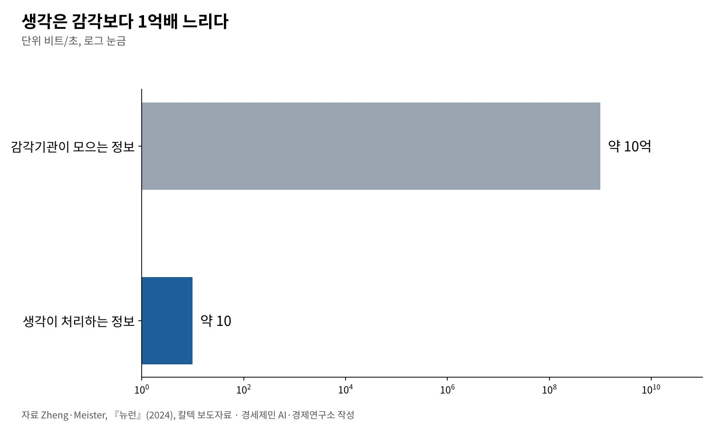

[AI 칼럼] AI 시대 진짜 공부, 따지고 충분히 자야 머리에 남는다
질문하면 다 나오는 시대, 내 머릿속엔 무엇이 남았나
생각은 1초에 10비트, 작업기억은 네 덩이, 기억을 굳히는 일은 잠이 한다
챗지피티로 글 쓴 집단, 뇌 연결 가장 약하고 자기 글 인용도 못 해
AI경제저널=김갑봉 기자 | 필자는 2003년 지역신문에 들어가 2025년까지 일하며 편집국장을 지냈다. 지금은 대학 연구센터에서 연구하며 AI를 주제로 강연한다. 경제기사와 연구보고서, 논문, 강연 자료까지 AI 프로젝트 10여개를 함께 돌린다.
예전 같으면 분야마다 연구원을 한 명씩 붙여야 할 일이다. 산출물은 폭발했다. 그런데 어느 날 스스로 물었다. 이게 내 지식인가.
AI가 답의 값을 떨어뜨린 시대다. 무엇이 머리에 남고 무엇이 스쳐 가는지, 뇌과학 연구와 필자의 경험을 함께 놓고 따져 본다.

질문하면 다 나온다, 그런데 머릿속은 비어 간다
AI에게 물으면 법률과 의학, 경제학, 역사, 공학이 몇 초 만에 나온다. 교수가 한 학기 가르칠 내용을 몇 분 만에 정리해 준다. 필자는 그 속도를 날마다 겪는다.
논문 주제를 잡을 때도, 방법론을 고를 때도, 선행연구를 훑을 때도 AI가 옆에 있다. 교수 한 명이 곁에 붙은 것과 다르지 않다. 필자도 연구자인데 연구자가 덜 필요해지는 시대를 산다.
지식을 아는 것의 값어치는 내려갔다. 누구나 물으면 안다. 그렇다면 남는 것은 무엇인가.
필자는 슘페터의 『경제분석의 역사』를 끝까지 읽지 않고 서평을 썼다. 목차를 AI에게 주고 AI가 정리한 내용에 필자가 아는 사실과 관점을 더했다. 그럴듯한 서평이 나왔다.
마르크스의 『자본론』도, 피케티의 『21세기 자본』도 다 읽지 못했다. 그런데 잉여가치가 무엇인지 안다. 자본수익률이 성장률보다 높으면 불평등이 커진다는 피케티의 부등식도 안다.
수십 년 경제를 취재하고 논문을 읽고 토론하며 여러 길로 되풀이해 만났기 때문이다. 반면 AI가 대신 정리한 선행연구는 기억에 없다. AI가 써 준 문장도 남지 않았다. 학위논문을 쓸 때와 다르다.
실험이 보여 준 '인지 부채'
필자만의 느낌이 아니다. 미국 매사추세츠공대(MIT) 미디어랩 연구진은 2025년 6월 실험 결과를 공개했다. 54명을 챗지피티 집단, 검색 엔진 집단, 아무 도구도 쓰지 않는 집단으로 나눠 에세이를 쓰게 했다.
뇌파(EEG)로 보니 도구 없이 쓴 집단의 뇌 연결망이 가장 넓었다. 검색 집단이 중간, 챗지피티 집단이 가장 약했다. 넉 달에 걸쳐 챗지피티 집단은 신경과 언어, 행동 수준 모두에서 뒤졌다.
챗지피티 집단은 방금 쓴 자기 글을 제대로 인용하지 못했다. 첫 회차에서 이 집단의 83%가 인용에 어려움을 겪었다는 보도가 나왔다. 글이 내 것이라고 느끼는 정도도 가장 낮았다.
연구진은 이를 '인지 부채'라고 불렀다. 다만 이 연구는 동료 심사를 거치기 전 공개한 논문이다. 표본도 작다. 결론을 키우지 말고 방향을 보는 자료로 읽어야 한다.
남는 것과 안 남는 것, 장기기억의 조건
돌아보면 차이가 분명하다. 남는 것은 이미 아는 지식을 AI와 대화하며 다시 확인할 때다. 연구 주제를 정하고 AI와 따지며 깊이 파고들 때다.
방법론을 고를 때가 그렇다. 전통적 회귀분석을 쓸지, 이중차분법이나 회귀불연속, 구조방정식을 쓸지 판단할 때 지식이 붙는다. 퍼지셋 질적비교분석(fsQCA)도 AI와 대화하며 처음 만났다.
'사례가 적어 양적연구가 어려울 때 쓰는 방법'이라는 핵심은 남았다. 이미 아는 양적연구 지식과 이어졌기 때문이다. 모르는 사람에게는 그냥 영어 약자일 뿐이다.
안 남는 것은 AI가 대신 정리한 선행연구, AI가 써 준 연구배경이다. 고민하지 않고 가져다 쓴 출력물은 하나도 남지 않았다. 손을 거치지 않은 글은 머리를 거치지 않는다.
2000년 노벨생리의학상은 신경계 신호전달을 밝힌 아르비드 칼손, 폴 그린가드, 에릭 캔들에게 돌아갔다. 노벨위원회는 캔들의 업적을 이렇게 설명했다. 단기기억과 달리 장기기억에는 새 단백질이 필요하다.
새 단백질을 막으면 장기기억은 막히고 단기기억은 남는다. 장기기억은 신경세포 연결 지점인 시냅스의 모양까지 바꾼다. 되풀이한 자극이 뇌에 물리적 흔적을 남긴다.
캐나다 심리학자 도널드 헤브는 1949년 『행동의 조직』에서 함께 활동하는 신경세포의 연결이 강해진다는 가설을 냈다. 흔히 인용하는 '함께 발화하는 뉴런은 함께 연결된다'는 문장은 1992년 연구자들이 그 뜻을 줄인 말이다.
기존 연결망이 있어야 새 정보가 붙는다. 붙을 곳이 없으면 스쳐 간다. 뉴런에 저장돼야 내 지식이다. 저장되지 않은 것은 AI의 지식이다.
뇌에도 용량이 있고, 정리는 잠이 한다
뇌는 무한하지 않다. 미국 캘리포니아공대(칼텍) 연구진은 2024년 12월 『뉴런』에 사람의 생각이 1초에 약 10비트를 처리한다는 분석을 냈다. 감각기관은 1초에 약 10억비트를 모은다.
들어오는 정보의 1억분의 1만 생각으로 다룬다는 뜻이다. 동시에 붙잡는 정보도 적다. 심리학자 넬슨 코완은 2001년 논문에서 작업기억 용량을 평균 네 덩이 안팎으로 봤다.
낮에 들인 정보를 굳히는 일은 밤에 한다. 수면 연구자 수잔 디켈만과 얀 보른은 2010년 논문에서 잠을 새 정보를 기억으로 굳히는 데 가장 알맞은 상태로 정리했다.
깊은 잠인 서파수면은 해마에 잠시 담긴 기억을 대뇌피질로 옮기는 데, 렘수면은 시냅스를 다지는 데 관여한다. 잠을 줄이고 AI로 정보를 더 쏟아부으면 정리할 시간이 사라진다.

따지는 과정과 기초학문의 뼈대가 공부다
그러면 제한된 머리와 시간으로 무엇을 해야 하나. 따져야 한다. 필자는 논문을 쓸 때 주제를 스스로 정한다. 어떤 문제를 풀지, 왜 지금 필요한지는 AI가 대신 정하지 못한다.
주제가 서면 AI와 대화를 시작한다. 어느 각도로 다가갈지, 선행연구에서 무엇이 빠졌는지 묻는다. 답을 그대로 받지 않는다. 근거가 무엇인지, 다른 해석은 없는지 다시 묻는다.
데이터는 통계 프로그램으로 직접 돌리고 결과도 직접 읽는다. 숫자가 무엇을 말하는지 판단하는 일은 기존 지식이 한다. 선행연구 목록은 그 논문이 정말 있는지 하나씩 확인한다.
AI는 없는 논문을 지어내기도 한다. 검증 없이 가져다 쓰면 학술 부정이 된다. 기사도 같다. 구성안을 받고 끝내지 않고 왜 이렇게 짰는지, 수치의 출처가 무엇인지 묻는다.
받아쓰면 안 남고 따지면 남는다. 따지는 과정에서 기존 지식과 AI의 답이 부딪힌다. 그때 뉴런이 함께 발화하고 연결이 굳는다. 공부가 된다.
수학과 과학, 언어, 문학, 철학, 윤리학, 정치학, 경제학, 역사가 연결망의 뼈대다. 대학까지는 이 뼈대를 세우는 시간이다. 뼈대가 있어야 AI가 가져온 정보가 붙을 곳이 생긴다.
뼈대가 없으면 AI가 그럴듯하게 틀려도 알아채지 못한다. 필자는 취재 현장에서 이론으로만 알던 것을 사람의 얼굴로 봤다. 물류학을 공부하며 공급망과 비용함수가 실제 경기에서 어떻게 움직이는지 봤다.
마르크스를 다 읽지 않고도 잉여가치를 아는 까닭은 그 뼈대를 오래 쌓았기 때문이라고 본다. 경제학의 뼈대가 없는 사람이 같은 방식으로 서평을 쓰면 깊이가 없다. 그래서 계속 공부한다.
책은 느려서 남는다, 그리고 충분히 자라
책은 느리다. 한 쪽을 넘기는 데 몇 분이 걸린다. 그 느림이 핵심이다. 앞장과 뒷장을 잇고 내 경험과 잇는다. 지은이의 논리에 동의하거나 반발하며 감정이 실린다. 그때 연결이 생긴다.
AI 출력물을 읽을 때는 이 과정이 없다. 내가 고르지 않았고 내가 찾지 않았다. 감정이 실리지 않으니 연결도 생기지 않는다. 짧은 서평이라도 직접 쓰면 남는 것이 많다.
역사를 읽으면 지금 일이 처음이 아님을 안다. 문학을 읽으면 사람의 마음을 안다. 철학을 읽으면 '왜'를 묻는다. AI 시대에 책 읽기는 쓸모없어지지 않는다. 오히려 더 귀해진다.
AI는 피할 수 없다. 필자도 AI 없이는 프로젝트 10여개를 못 돌린다. 체념이 아니라 방법을 찾아야 한다. 받아쓰지 말고 따져라. 하루 종일 AI를 쓰지 말고 멈출 선을 두라.
기초학문으로 뼈대를 먼저 세워라. 그리고 충분히 자라. 낮에 따진 것을 밤에 뇌가 굳힌다. 충분한 휴식과 수면, 적당한 노동과 즐거운 놀이가 건강하게 사는 길이라는 어른들 말이 맞다.
이 칼럼을 쓰면서도 같은 일이 있었다. AI가 헤브의 1949년 책 문장이라며 '함께 발화하는 뉴런은 함께 연결된다'를 붙였다. 따져 보니 1992년에 나온 요약이었다. 따지지 않았으면 틀린 채 나갔다.
AI는 답의 값을 떨어뜨렸다. 이제 질문의 값이 오른다. '이게 내 지식인가.' 이 질문을 되풀이하는 사람과 그러지 않는 사람의 차이가 AI 시대에 지식인과 지식 소비자를 가른다.
참고문헌
기관 자료
- Caltech, "Thinking Slowly: The Paradoxical Slowness of Human Behavior", 2024년 12월 17일. https://www.bbe.caltech.edu/news/thinking-slowly-the-paradoxical-slowness-of-human-behavior
- 노벨재단, "The Nobel Prize in Physiology or Medicine 2000"(요약), https://www.nobelprize.org/prizes/medicine/2000/summary/
- 노벨위원회, "Press release: The Nobel Prize in Physiology or Medicine 2000". https://www.nobelprize.org/prizes/medicine/2000/press-release/
- MIT Media Lab, "Your Brain on ChatGPT"(연구 개요). https://www.media.mit.edu/projects/your-brain-on-chatgpt/overview/
연구 논문과 보고서
- Zheng, J., & Meister, M., "The Unbearable Slowness of Being: Why do we live at 10 bits/s?", 『Neuron』 게재, 2024년 12월 17일(arXiv 2408.10234). https://arxiv.org/pdf/2408.10234v1
- Kosmyna, N., Hauptmann, E., Yuan, Y. T., Situ, J., Liao, X.-H., Beresnitzky, A. V., Braunstein, I., & Maes, P., "Your Brain on ChatGPT: Accumulation of Cognitive Debt when Using an AI Assistant for Essay Writing Task", arXiv 2506.08872, 2025년 6월 10일(2025년 12월 31일 수정). https://arxiv.org/abs/2506.08872
- Cowan, N., "The magical number 4 in short-term memory: A reconsideration of mental storage capacity", 『Behavioral and Brain Sciences』 24, 2001년, pp.87-185. https://memory.psych.missouri.edu/assets/doc/articles/2001/cowan-bbs-2001.pdf
- Diekelmann, S., & Born, J., "The memory function of sleep", 『Nature Reviews Neuroscience』 11(2), 2010년, pp.114-126. https://www.nature.com/articles/nrn2762
- Hebb, D. O., 『The Organization of Behavior』, Wiley, 1949년.
언론 보도
- Mashable, "Using ChatGPT to write? MIT study says there's a cognitive cost", 야후 게재, 2025년 6월 20일. https://tech.yahoo.com/ai/articles/using-chatgpt-write-mit-study-161519019.html
- "Firing and wiring", Language Log(펜실베이니아대), https://languagelog.ldc.upenn.edu/nll/?p=25194
[사진 출처]
- [사진1] EllalineSeoul, "Library in Seoul National University School of Law.jpg", 위키미디어 공용, CC0. https://commons.wikimedia.org/wiki/File:Library_in_Seoul_National_University_School_of_Law.jpg
※ 이 기사는 AI 프로그램 클로드를 활용해 작성했습니다.
관련기사
- [AI 칼럼] '읽는 뉴스' 저물고 '보는 뉴스' 떴다, 이제 AI가 뉴스를 답한다
- [AI 칼럼] AI 다섯 개로 220쪽 보고서를 써 보니, 일한 도구와 논 도구
- [AI동향] AI 패권 경쟁의 병목은 메모리, 9월 반도체 수출 603억 달러
- [AI동향] 오픈AI, AI가 쓴 수학 논문 722편 공개…하루 만에 3편 철회
저작권자 © AI경제저널 무단전재 및 재배포, AI학습 및 활용 금지